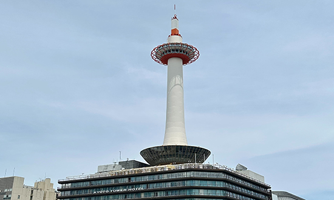
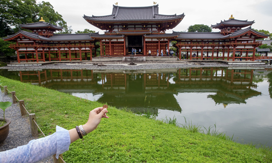
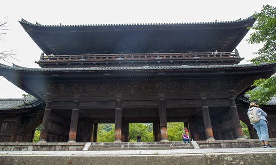

1 / 10

Capturing the twilight
alongside Kansai International Airport
as if stepping into an Impressionism painting
preserving a romantic moment.
2 / 10

The sunlight in Izumisano
colorizes the clouds in red,
awakening the slumbering streets
inch by inch...
3 / 10

In the Kyoto Tower
Getting a bird's-eye view of the whole city
Having a breathtaking scenes delight the sight
4 / 10

Nijo Castle walked through four centuries,
The Tokugawa shogunate rised and fell
All remarkable figures has the ebb and flow
only the ancient castle stands steadfast here.
5 / 10

Byodoin, a millennia-old temple,
minted on the 10 yen coin
On the rooftop of Phoenix Hall,
a pair of phoenixes
perhaps arrived in the Buddhism Pure Land.
6 / 10

In the garden of Mimuroto-ji Temple
thousands of hydrangeas bloom
just in the midst of midsummer
resembling a poetry of Japan's summer.
Note: The temple's hydrangeas
were traditionally used to console
7 / 10

At a corner of Hanamikoozi
Mamasan in Izakaya:
'I told you to work hard,
how you dare to hang out? '
staff: 'sumimasen!(sorry in Japanese)'
8 / 10

A thousand-year-old Buddhist temple
with a stage hanging high
Water no longer flow tranquilly
as bustling crowds surge and throng
The Guanyin remains majestic
but the site fills with clamor.
9 / 10

In the garden of Zen Temple,
ripples form circles in the gravels.
Feeling the peaceful ambiance at Nanzen-ji,
finding inside clarity through meditation.
10 / 10

While strolling along the Philosopher's Walk
finding the understanding as Nishida did.
Even cats attain enlightenment here,
'feline life should be leisure'.
❮
❯